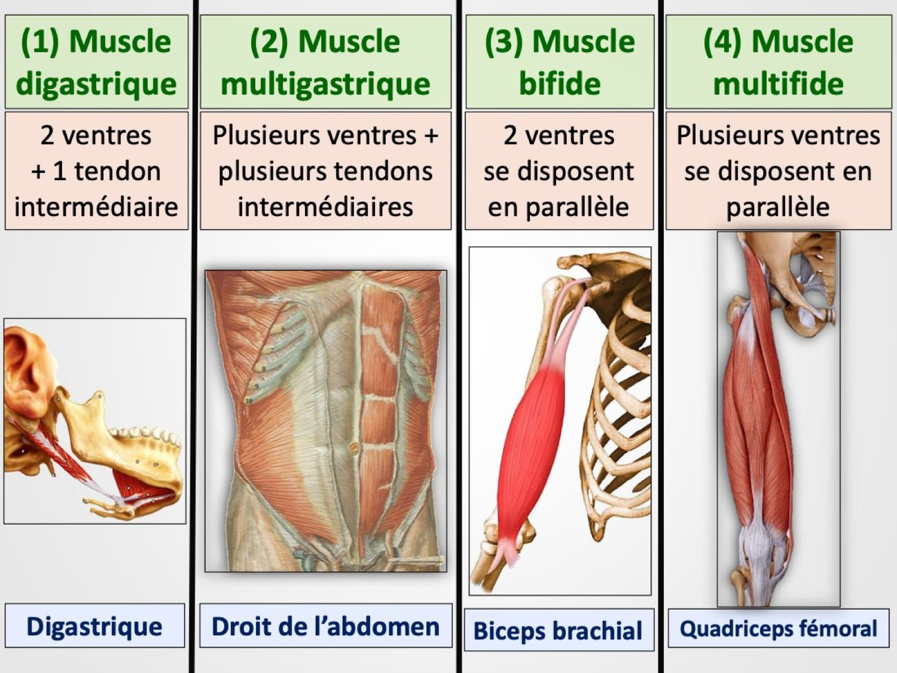
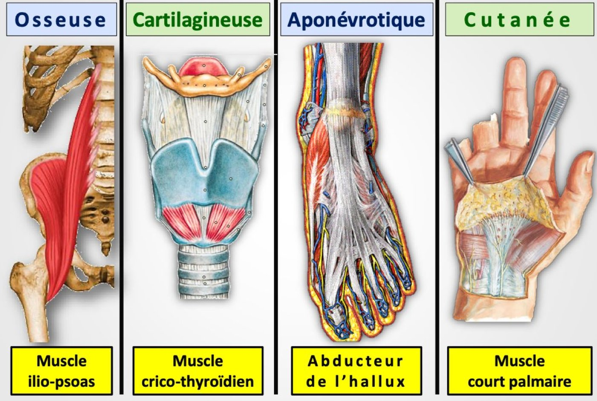

S1 · Anatomy · Summary
Muscular system
- Essentials
- Definition & roles
- Properties
- 3 muscle types
- Skeletal muscle
- Nomenclature
- Appendices
- Clinical myology
- Exam traps
- Self-check
If you remember only this
- Muscle = the driving element of the locomotor system: an organ that contracts (shortens) under a stimulus. Its study = myology.
- Roles: movement, heat (thermogenesis), posture, joint stabilization, protection of viscera, visceral functions. Properties: excitability, contractility, elasticity, tone.
- 3 types: skeletal (striated, voluntary, CNS, attached to the skeleton), cardiac (= mixed: striated but involuntary, never tires, ANS), visceral (smooth, involuntary, slow, ANS, hollow viscera / vessels / skin).
- 600 constant skeletal muscles. Deep = sub-aponeurotic (digestive/respiratory, skeleton, sense organs); superficial = supra-aponeurotic, subcutaneous (facial/skin muscles).
- Insertion on 4 sites: bone (iliopsoas), cartilage (cricothyroid), aponeurosis (abductor hallucis), skin (palmaris brevis). Origin = proximal = fixed; termination = distal = mobile.
- 4 appendices: serous bursae, serous tendon sheaths, fibrous sheaths, muscular fascia (covering aponeurosis — encases and separates muscles).
1–2. Definition and roles p. 1 2023-24
Muscle
The driving force of the locomotor system: an organ that contracts (shortens) under the influence of a stimulus (nervous,
electrical, thermal, painful excitation…). The study of muscles is myology.
- Production of movement.
- Production of heat (thermogenesis).
- Maintaining posture.
- Joint stabilization.
- Protection of the viscera.
- Visceral functions: digestion, defecation, urination, blood propulsion, vasoconstriction/vasodilation, childbirth…
3. Properties of muscles p. 1 2023-24
| Property | Definition |
|---|---|
| Excitability and contractility | Ability to contract following an excitation |
| Elasticity | Ability to stretch without tearing |
| Tone (tonicity, tonus) | Ability to keep a slight permanent contraction despite relaxation → balance at rest (posture). Disappears when lying down, in coma and in death (atonic subject). |
4. Classification — 3 types of muscle p. 1 2024-25
| Skeletal | Cardiac | Visceral | |
|---|---|---|---|
| Other names | Striated, red | Mixed | Smooth |
| Cells | Striated | Striated | Non-striated |
| Location | Attached to the skeleton — muscles of the limbs, trunk, head and neck; also tongue, pharynx, larynx, eye muscles (slides) | Heart walls (myocardium); slides: the muscles of hearing are "another mixed muscle" | Hollow viscera (digestive, bladder, uterine, respiratory walls), vessel walls, skin |
| Contraction | Voluntary, fast | Involuntary, automatic, rhythmic, fast | Involuntary, slow, continuous |
| Fatigability | Fast | Never | Never |
| Nervous control | CNS | ANS (autonomic) | ANS (autonomic) |
Memory trick
"Mixed" = it mixes the two others: striated like skeletal, but involuntary and ANS-controlled like visceral.
Skeletal muscle p. 2 2025-26
1. Number
600 constant skeletal muscles; the number varies because of inconstant (accessory) muscles — e.g. the plantaris.
2. Situation — 2 groups 🎯
Deep = sub-aponeurotic
Muscles of the digestive and respiratory systems (e.g. pharynx, larynx), muscles of the skeleton, muscles of the sense
organs.
Superficial = supra-aponeurotic, subcutaneous
Skin (cutaneous) muscles of the head and neck — facial muscles.
3. Division
A simple muscle = monogastric, with 3 parts:
| Part | Features |
|---|---|
| 1 middle part: muscle belly (body) | Large, red, fleshy, contractile |
| 2 ends: tendons | Narrow, whitish, elastic, resistant |
4 other varieties:
| Variety | Structure | Example |
|---|---|---|
| Digastric | 2 bellies + 1 intermediate tendon (in series) | Digastric muscle |
| Multigastric | Several bellies + several intermediate tendons | Rectus abdominis |
| Bifid | 2 bellies in parallel | Biceps brachii |
| Multifid | Several bellies in parallel | Quadriceps femoris |
In a bifid or multifid muscle the parallel tendons are called heads (chefs) — e.g. triceps brachii, biceps brachii.

4. Insertion 🎯
- A double insertion: origin = proximal = fixed; termination = distal = mobile (slide example: brachioradialis).
- Sometimes the origin can become mobile.
| Site (4) | Example |
|---|---|
| Bone | Iliopsoas |
| Cartilage | Cricothyroid |
| Aponeurosis | Abductor hallucis |
| Skin | Palmaris brevis |

5. Shape
| Shape | Definition | Example |
|---|---|---|
| Long | Length predominates over width and thickness | Sartorius |
| Flat | Length and width predominate over thickness | Latissimus dorsi |
| Short | All 3 dimensions reduced | Muscles of the hypothenar compartment |
| Annular | Around openings (orifices) | Orbicularis oculi (eyelids), orbicularis oris (lips) |
| Geometric | — | Trapezius, pronator quadratus, depressor anguli oris (triangular muscle of the lips) |
6. Summary: nomenclature p. 3
Muscle names follow morphological and functional criteria (7):
| Criterion | Examples |
|---|---|
| 1. Size | Gluteus maximus, pectoralis minor, fibularis longus |
| 2. Action | Adductor magnus, supinator, flexor digitorum superficialis |
| 3. Situation | Dorsal interossei, gluteal muscles, brachialis |
| 4. Shape | Piriformis, quadratus plantae |
| 5. Fibre direction | Internal oblique, rectus abdominis |
| 6. Insertion | Brachioradialis, coracobrachialis |
| 7. Number of heads | Biceps femoris, triceps brachii |
7. Appendices (annexes) — 4 p. 3 2025-26
Anatomical structures useful to the muscle, facilitating its action:
| Appendix | Description |
|---|---|
| Serous (synovial) bursae | Membranous sacs filled with synovial fluid, near joints; help muscles glide |
| Serous tendon sheaths | Serous bursae wrapped around tendons |
| Fibrous sheaths | Fibrous grooves that form with the bone an osteofibrous canal in which tendons slide, wrapped in serous sheaths |
| Muscular fascia (covering aponeurosis) 🎯 | Fibrous membrane that encases (sheathes) and separates the muscles |
Clinical myology (slides)
Exploration
| Method | Details |
|---|---|
| 1. Ultrasound | Shows fibres and aponeurosis |
| 2. CT scan | e.g. thigh muscles |
| 3. MRI | e.g. thigh muscles |
| 4. Electromyogram (EMG) | Records the electrical activity of the muscle |
| 5. Muscle biopsy | Sampling of muscle |
| 6. Muscle testing | Evaluates the strength of a muscle or group; scored 0 to 5 |
Pathology
| Condition | Definition |
|---|---|
| 1. Cramp | Sudden, involuntary, painful, transient contraction that stops spontaneously |
| 2. Aches (courbature) | Diffuse muscle pain |
| 3. Contracture | Involuntary, painful, permanent contraction (e.g. torticollis, trismus of the jaw) |
| 4. Tear (strain, claquage) | Muscle rupture after excessive stretching (stages: elongation → tear → rupture) |
| 5. Bursitis | Inflammation of serous bursae (elbow, retro-Achilles) |
| 6. Tenosynovitis | Inflammation of the synovial sheaths of tendons |
| 7. Compartment syndrome | Muscle ischaemia from raised pressure in an anatomical compartment (treated by opening the compartments) |
| 8. Congenital myopathies | e.g. facioscapulohumeral myopathy, Duchenne myopathy |
Don't mix up
Cramp = transient, stops by itself. Contracture = permanent.
Exam traps
False statements to recognise
- "Rigidity" is a muscle property — false: tone, elasticity, contractility, excitability. 2023-24
- Roles include "vitamin production" or "concentration of clotting factors" — false. 2023-24
- Striated muscles are "visceral" or "made of non-elongated cells" — false: skeletal, elongated cells, attached to the skeleton. 2024-25
- Smooth muscles are "under voluntary control" or "in the arm/neck" — false: ANS, viscera. 2024-25
- "Broad abdominal muscles" or "eye muscles" are mixed — false (eye muscles are skeletal). Mixed = myocardium, muscles of hearing; the official 2024-25 key also counts the diaphragm, which this PDF doesn't mention. 2024-25
- A sub-aponeurotic muscle is "subcutaneous", "between fascia and skin" or "involuntary" — false: it is deep (e.g. pharynx, larynx). 2025-26
- "Cricothyroid inserts on fascia", "abductor hallucis inserts on cartilage" — false: cricothyroid → cartilage, abductor hallucis → aponeurosis. 2025-26
- "The fascia is a fibrous groove forming osteofibrous canals" / "facilitates gliding" — false: that's the fibrous sheath / the serous bursa. 2025-26
Self-check
Define a muscle. What is myology?
An organ that contracts (shortens) under a stimulus — the driving element of the locomotor system. Myology = study of muscles.
Give the 6 roles of the muscular system.
Movement, heat (thermogenesis), posture, joint stabilization, protection of viscera, visceral functions.
What is muscle tone and when does it disappear?
A slight permanent contraction despite relaxation, keeping posture at rest; disappears when lying down, in coma and in death.
Compare skeletal, cardiac and visceral muscle (cells, contraction, fatigue, control).
Skeletal: striated, voluntary, fast, tires fast, CNS. Cardiac (mixed): striated, involuntary/automatic/rhythmic, never tires, ANS.
Visceral (smooth): non-striated, involuntary/slow/continuous, never tires, ANS.
How many constant skeletal muscles? Example of an inconstant one?
600; the plantaris (accessory muscle).
Deep vs superficial muscles?
Deep = sub-aponeurotic: digestive/respiratory, skeletal, sense-organ muscles. Superficial = supra-aponeurotic, subcutaneous: skin muscles of
head and neck (facial).
Describe belly and tendon.
Belly: large, red, fleshy, contractile. Tendons: narrow, whitish, elastic, resistant.
Digastric vs bifid? Multigastric vs multifid? Examples.
Digastric: 2 bellies + intermediate tendon (digastric). Bifid: 2 parallel bellies (biceps brachii). Multigastric: several bellies + tendons
(rectus abdominis). Multifid: several parallel bellies (quadriceps femoris).
Name the 4 insertion sites with an example each.
Bone (iliopsoas), cartilage (cricothyroid), aponeurosis (abductor hallucis), skin (palmaris brevis).
Give the 5 shapes with an example each.
Long (sartorius), flat (latissimus dorsi), short (hypothenar muscles), annular (orbicularis oculi/oris), geometric (trapezius, pronator
quadratus).
List the 7 naming criteria with one example each.
Size (gluteus maximus), action (supinator), situation (brachialis), shape (piriformis), fibre direction (internal oblique), insertion
(coracobrachialis), number of heads (triceps brachii).
What are the 4 muscle appendices?
Serous bursae, serous tendon sheaths, fibrous sheaths (osteofibrous canals), muscular fascia (encases and separates muscles).
Cramp vs contracture? What is compartment syndrome?
Cramp: transient, stops spontaneously. Contracture: permanent. Compartment syndrome: muscle ischaemia from raised pressure in a compartment.